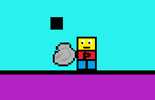

Bad Physics Game 0.15
Update log :-
- Added a "factors" file to the audio folder
- Changed the .wav to .ogg in the audio folder in the computer of the game NOT THE REAL FILES
- Increased the performance a tiny insignificant bit which will probably be worse after all the updates in this version
- Removed the "ladder" from the lab
- Added ~562949950000000000 universes
- Added a sound for void damage
- Decreased the void damage
- Devmode changes
- You now hold the stone in your hand when it's selected in your Inventory